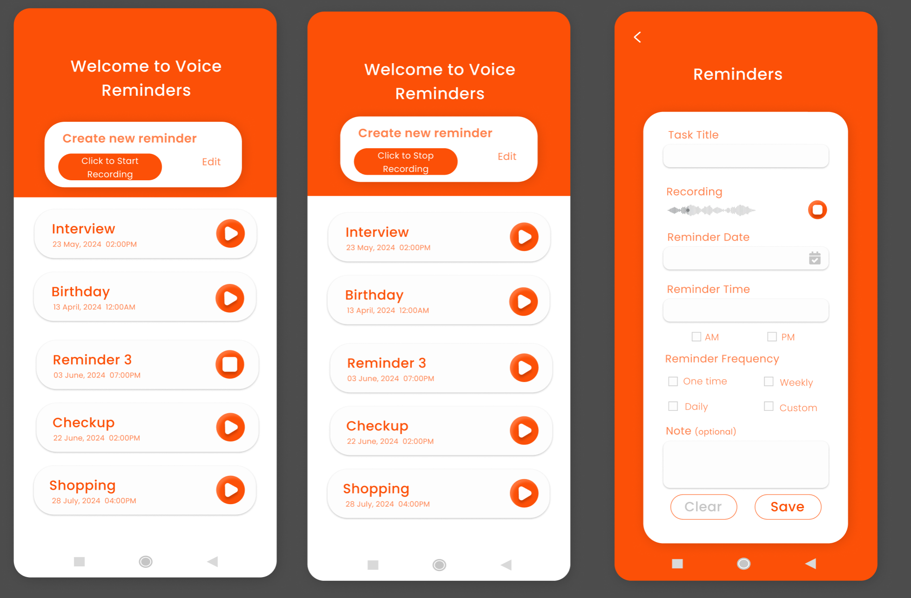
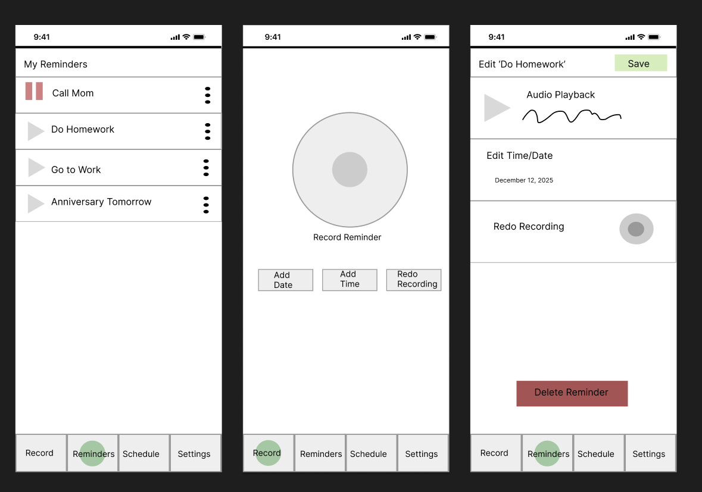

Voice Reminder
Created by Hailey Hudson & Genesis Valenzo
A simple, easy-to-use app that lets you record quick voice reminders whenever something pops into your head. Just hit record, say what you need to remember, and play it back anytime. Built with Expo and React Native, it keeps things clean, fast, and super straightforward—perfect for anyone who likes talking things out instead of typing.
Motivation
The idea for our app came from wanting a faster, more natural way to keep track of things in everyday life. Typing out notes can feel slow or distracting, especially when you're busy, on the move, or just want to capture a thought before it slips away. We wanted something that made reminders effortless—just speak, save, and keep going. Our motivation was to create a tool that feels intuitive, lightweight, and actually helpful in those tiny moments when you need it most.
Online Study
We searched for apps on the Google Play store that had keywords such as ‘Reminder’, ‘Voice Reminder’, and ‘Audio Reminder’. These apps were chosen because they included these keywords, or they had a similar concept to what we were planning with our app. We then scraped through the apps that had at least three reviews. We used apps with the main functionality of having reminders with “recordings”. Additionally, one of the apps we scrapped had the basic functionality of a reminders app to compare with our intended app design. This gave us a different perspective and data on how we built our project. Not only thinking of the main features, but also the design of the interface.
Our analysis found that most apps that have audio cues to remind you often go off late or not at all, have ads that block key features such as settings or search. Most of the apps didn't have enough customization for the reminder date or time, but users also praised the simplicity of a lot of the apps, which helped with intuitiveness for navigating the app. Find the Documentation below.
Lofi Prototype 1

Lofi Prototype 2

User Studies
Study with Low Fidelity Prototypes
The data we gathered from our evaluations consisted of feedback for both of our prototypes, as well as more insight into how users interact with setting reminders in their day-to-day lives. Many users we interviewed do not currently use voice commands or voice-to-text in their daily lives, but would be open to trying out a recording feature for the sake of convenience, provided the features are not overly complex. We also learned that many reminders set by users can be missed more often than we had previously thought. Most people we interviewed had experiences where the app that they used for reminders actually failed the task of reminding them, whether that be due to poor/confusing interface design or bugs that did not send out reminders.
Study with Functional Prototype
Overall, users complimented the ease of navigation for the app, particularly in recording reminders and utilizing the swipe feature to edit and delete them. In addition to its simplicity and cleanliness, it is not overwhelming. Some of the issues users encountered were difficulty in finding the edit button, as a long press was a more natural reaction than a swipe to the left. Additionally, as we currently have a bug with double-clicking the reminder play button to hear the reminder, some were confused about its functionality. More feedback was provided in response to a recording gesture or listing the reminders in chronological order, with the most recent recording at the top.